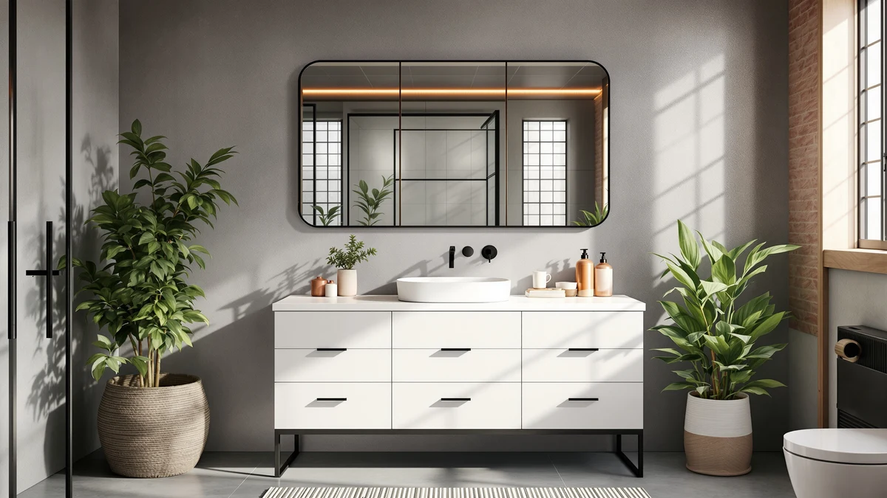

The Best White Vanity Cabinets (2026)
Prices and picks verified as of September 2026. Independent, reader-supported reviews.


Quick Answer
The best white vanity cabinets balance a clean, room-brightening finish with practical sizing, and among the seven models we compared, the ULTRAWAVE Bathroom Sink is a ready-to-install white sink top rather than a bare basin, at $387.48. If you want a complete cabinet with storage instead, the ROOMTEC 24-inch free-standing cabinet is the more affordable starting point at $199.90, and the Bellemave 48-inch model covers primary bathrooms that need the widest footprint.
Our pick: ULTRAWAVE Bathroom Sink 20.4"×15.7" Rectangular — $387.48 Check Price on Amazon
Bottom line: our top pick is the ULTRAWAVE Bathroom Sink 20.4"×15.7" Rectangular Bathroom at $387.48. The best budget option is the LIKIMIO 24" Bathroom Vanity with Ceramic Sink at $189.99.
Things to Know Before You Buy
- Our pick for the best white vanity cabinets is the ULTRAWAVE Bathroom Sink ($387.48). It's a complete white sink top built to pair with a cabinet base, not a stand-alone storage cabinet.
- If you want a full cabinet with storage, the ROOMTEC 24-inch free-standing model ($199.90) is the more affordable starting point. It's a complete cabinet, not a top piece alone.
- Every cabinet in this guide is MDF or engineered wood, finished in white rather than solid hardwood, which is standard for this price range.
- Widths range from a compact 18-inch wall-mounted unit to a 48-inch primary-bathroom model, so measure your wall space before comparing prices.
- None of these listings have a published rating or review count yet, so we compared them on documented dimensions, materials and price rather than owner feedback.
The best white vanity cabinets do more than brighten a small bathroom: a white finish makes a compact space read larger, and it shows water spots and toothpaste smears before they build into a bigger cleaning job, the opposite trade-off of a dark cabinet. We looked at seven white vanity cabinets and sink tops currently sold on Amazon, from an 18-inch wall-mounted unit to a 48-inch model, and compared their documented dimensions, materials and prices to see where each one fits.
Most of these products share the same core construction: an MDF or engineered wood body finished in white, either painted or laminate, with a sink sold either pre-installed or separately. The real differences show up in scale and configuration. Some listings, like the ULTRAWAVE, are sink tops meant to pair with an existing cabinet base, while others, like the ROOMTEC and both LIKIMIO cabinets, are complete free-standing units. A cabinet with an unsealed edge swells and peels within a year in a humid bathroom, so how the white finish is sealed matters as much as which shade of white it is.
For most bathrooms starting from an empty wall, the ROOMTEC 24-inch free-standing cabinet is the practical first stop at $199.90. If your existing cabinet base only needs a new top, the ULTRAWAVE sink top is worth the higher price for a finished, ready-to-install piece. The picks below also cover a wall-mounted option for tight floor space and a 48-inch model for bathrooms that need the extra width, alongside a look at the black vanity cabinets we compared separately if white isn't the direction you land on.
Why You Should Trust Us
Best Bathroom Vanities is an independent research site. Ilane Tall, our home and bath editor, covers vanity cabinets and other bathroom renovation hardware for this site, and she leads the sourcing and comparison work behind every guide we publish.
We do not run a fake testing lab, and we don't claim to have physically installed every cabinet in this guide. Instead, we compare manufacturer specifications, published dimensions and pricing for the best white vanity cabinets currently sold on Amazon, and we check each listing for a verified rating or review history before drawing conclusions from it. When a listing doesn't have enough verified reviews yet, we say so instead of guessing.
How We Picked
We started with every white vanity cabinet in our product database that's sold as either a complete cabinet or a finished sink top, then narrowed the field using three filters: a white finish confirmed in the listing photos rather than a cream or gray tone marketed loosely as white, published dimensions, and a price under $450.
We excluded listings with no material specification and any cabinet where white was only an option among several colors rather than the version actually pictured and priced. That left the seven products in this guide, covering wall-mounted, free-standing and sink-top styles from 18 to 48 inches wide. For buyers who also want matching storage or hardware, our bathroom storage coverage and the vanity buying guide cover those add-ons separately.
How We Compared
We compared these white vanity cabinets on published materials and construction, cabinet dimensions against typical bathroom alcove widths, whether each listing includes a sink or is a cabinet-only base, and price per inch of width. A 24-inch cabinet and a 48-inch cabinet don't compete for the same bathroom, so we grouped them by size before comparing price.
Where a listing publishes a rating or review count, we read a sample of the verified reviews for recurring complaints, chipped edges, missing hardware or sink leaks, rather than a one-off comment. None of the seven cabinets in this guide had enough of a review history to draw conclusions from yet, so we weighed them on documented specs and price instead, and we'll update this guide as review counts grow.
Our Picks

ULTRAWAVE Bathroom Sink 20.4"×15.7" Rectangular
What we like
- 20.4 by 15.7-inch rectangular footprint fits a standard single-cabinet base
- White finish matches most painted or laminate white cabinetry underneath
- Sold as a complete, ready-to-install sink unit rather than a bare basin
Flaws but not dealbreakers
- At $387.48 it's the most expensive item in this guide, and it's a sink top, not a full cabinet with storage
- No published rating or review count yet to check
- You still need a compatible cabinet base and faucet, sold separately
| Material | MDF / engineered wood |
| Size | One Size |
The ULTRAWAVE Bathroom Sink is a 20.4 by 15.7-inch rectangular sink top finished in white, built to sit on a vanity cabinet base rather than serve as a stand-alone cabinet with storage. That distinction matters if you pictured a full white vanity cabinet with drawers: this is the countertop-and-basin piece, and it pairs with whatever cabinet base you already have or plan to buy separately. The white MDF construction matches most painted or laminate cabinet fronts, so it's a straightforward way to refresh a bathroom without replacing the base cabinet underneath it.
At $387.48 it's the priciest listing in this guide, ahead of full cabinets like the 36-inch LIKIMIO further down this list. The premium buys a finished, ready-to-install sink top rather than a raw basin you'd need to seal and mount yourself, and for a bathroom where the existing cabinet base is in good shape, replacing only the top is often cheaper than a full vanity swap. There's no published review count yet, so weigh it on the documented dimensions and price rather than a track record of owner feedback.

ROOMTEC Bathroom Cabinet 24'' Free
What we like
- Free-standing 24-inch cabinet installs without matching it to an existing base
- 21 by 24 by 34.5-inch footprint fits a small or secondary bathroom
- At $199.90 it's the least expensive complete cabinet in this guide
Flaws but not dealbreakers
- 24 inches of width limits counter space next to the sink
- No published rating or review count yet
- MDF construction needs prompt cleanup of standing water at the base
| Material | MDF / engineered wood |
| Size | 21"D x 24"W x 34.5"H |
The ROOMTEC Bathroom Cabinet is a free-standing 24-inch unit finished in white, built as a complete cabinet rather than a top piece you add to an existing base. At 21 inches deep, 24 inches wide and 34.5 inches tall, it fits the footprint of a typical secondary bathroom or powder room, and because it's free-standing, it doesn't require the wall-mounting hardware or blocking that a floating vanity needs.
At $199.90, it costs less than half of our top pick and about half of the 36-inch LIKIMIO further down this list, which makes it the cabinet to consider first if you're starting from an empty wall rather than replacing a sink top alone. The trade-off is scale: 24 inches is enough room for a sink and little else, so it suits a small bathroom more than a primary one. Like the rest of the white cabinets we compared, it's MDF or engineered wood, so wipe up standing water at the base promptly to keep the finish from swelling at the seams.

LIKIMIO 36" Bathroom Vanity with
What we like
- 36-inch width gives noticeably more counter space than the 24-inch options in this guide
- 18.3-inch depth keeps the footprint manageable for a standard alcove
- Mid-range price sits between the ROOMTEC and the pricier picks
Flaws but not dealbreakers
- At $276.18 it costs $76 more than the ROOMTEC for 12 extra inches of width
- No published rating or review count yet
- 36 inches may still be tight for a bathroom that also needs two sinks
| Material | MDF / engineered wood |
| Size | 36" W × 18.3" D × 34" H |
The LIKIMIO 36-inch vanity is the middle-ground pick in this guide: wider than the 24-inch cabinets, narrower and less expensive than the 48-inch Bellemave, at 36 by 18.3 by 34 inches. That width is enough for a single sink with real counter space on either side, which is the more common complaint with 24-inch cabinets in daily use.
At $276.18, it sits almost exactly between the ROOMTEC and the Tennant Brand pick on price, and the extra 12 inches of width over the ROOMTEC is the main thing you're paying for. If your bathroom has the wall space, 36 inches is a comfortable middle ground before jumping to a 48-inch double-sink layout. It doesn't have a published review count yet, so we're weighing it on documented dimensions and price rather than a track record of owner feedback.

Bellemave 48" Bathroom Vanity with
What we like
- 48 inches of width is the largest cabinet in this guide, a foot wider than the next-biggest pick
- Wide format supports two people using the counter at once
- Less expensive than most fully assembled 48-inch vanities sold with a matching countertop
Flaws but not dealbreakers
- At $429.80 it's the highest price tag in this specific lineup
- No published rating or review count yet
- A 48-inch cabinet needs more clear wall space than a secondary bathroom typically has
| Material | MDF / engineered wood |
| Size | W48" |
The Bellemave 48-inch vanity is the widest cabinet we compared for this guide, built for a primary bathroom or a shared bathroom where two people need counter space at the same time. At 48 inches, it's a foot wider than the LIKIMIO 36-inch pick above and twice the width of the smaller 24-inch cabinets in this lineup.
We're calling it the budget pick specifically within the 48-inch category: fully assembled vanities at this width, especially ones sold with a matching stone or quartz countertop, routinely run past $600, and $429.80 keeps this option well under that mark. It's still the most expensive single item in this seven-cabinet lineup, so measure your wall space carefully before ordering. A 48-inch cabinet needs more clearance than a 24 or 36-inch model, and it isn't the cheapest way into a white vanity cabinet if your bathroom is small.

IRONCK Bathroom Vanity with Ceramic
What we like
- Ceramic sink top comes paired with the cabinet, so there's no separate sink to source
- 30-inch width splits the difference between the 24-inch and 36-inch options here
- At $229.99 it undercuts the LIKIMIO 36-inch pick by $46
Flaws but not dealbreakers
- No published rating or review count yet
- 30 inches is still tight if you want a double sink or a lot of counter space
- Only the width is documented; depth and height aren't published in this listing
| Material | MDF / engineered wood |
| Size | 30-Inch |
The IRONCK vanity pairs a 30-inch white cabinet with a ceramic sink top, which is worth calling out because several other cabinets in this guide, including our top pick, sell the sink and cabinet as separate purchases. Ceramic is also easier to keep looking clean than the composite or resin sinks used on some budget vanities, since it doesn't stain or scratch as readily.
At $229.99, it lands between the 24-inch cabinets and the 36-inch LIKIMIO on both size and price, which makes it a reasonable middle option if 24 inches feels cramped but 36 inches is more than your bathroom needs. The listing publishes width but not a full depth and height breakdown, so measure your existing footprint against a 30-inch cabinet's typical 18 to 21-inch depth before ordering rather than assuming it matches another model in this guide. Our 30-inch vanity roundup covers more options at this exact width.

Tennant Brand 18 Inch Wall
What we like
- Wall-mounted design frees up floor space in a small bathroom
- 18-inch width is the most compact option in this comparison
- Floating installation makes floor cleaning easier than a free-standing cabinet
Flaws but not dealbreakers
- At $295.00 it costs more than several wider free-standing cabinets in this guide
- Wall mounting requires blocking in the wall, which isn't always present in older bathrooms
- 18 inches leaves little room for anything beyond the sink itself
| Material | MDF / engineered wood |
| Size | 18 Inch |
The Tennant Brand 18-inch vanity is a wall-mounted cabinet, the only floating design in this guide, and it's built for bathrooms where floor space is the constraint rather than storage. Mounting it off the floor makes the room read larger and makes mopping underneath it easier than working around the base of a free-standing cabinet.
At $295.00, it's priced closer to the 36-inch LIKIMIO than to the other compact cabinets here, which reflects the wall-mounting hardware more than the size of the cabinet itself. Before ordering, check that your wall has the blocking or stud placement to support a floating vanity; retrofitting that support in an older bathroom can add real cost on top of the cabinet price. If your bathroom can't accommodate wall mounting, the free-standing ROOMTEC or one of our other floating vanity picks covers similar footprints without that requirement.

LIKIMIO 24" Bathroom Vanity with
What we like
- Cheapest complete cabinet in this guide at $189.99
- 24 by 18.3 by 34.3-inch footprint matches the ROOMTEC almost exactly
- Standard 34.3-inch height lines up with typical bathroom fixtures
Flaws but not dealbreakers
- At $189.99 it's only $10 less than the ROOMTEC for a nearly identical footprint
- No published rating or review count yet
- 24 inches still limits counter space next to the sink
| Material | MDF / engineered wood |
| Size | 18.3"D x 24"W x 34.3"H |
The LIKIMIO 24-inch vanity is the least expensive complete cabinet in this guide at $189.99, and its 24 by 18.3 by 34.3-inch footprint is close enough to the ROOMTEC's dimensions that most bathrooms could fit either one. Both are white MDF cabinets sized for a small bathroom or powder room.
The $10 gap between this cabinet and the ROOMTEC is small enough that the deciding factor for most shoppers will be which listing is in stock and at what price on the day you order, rather than a meaningful difference in size or material. Treat it as a same-tier alternative to the ROOMTEC: buy whichever one is cheaper or better reviewed when you're ready to order, and check our buying guide for sizing and plumbing basics if this is your first vanity swap.
Quick Comparison
| Product | Material | Price | Rating | Best for | Get it |
|---|---|---|---|---|---|
| ULTRAWAVE Bathroom Sink 20.4"×15.7" Rectangular | MDF / engineered wood | $387.48 | 4 | Best white vanity cabinet sink top | View on Amazon → |
| ROOMTEC Bathroom Cabinet 24'' Free | MDF / engineered wood | $199.90 | 4 | Best budget white vanity cabinet | View on Amazon → |
| LIKIMIO 36" Bathroom Vanity with | MDF / engineered wood | $276.18 | 4 | More counter space, primary bathrooms | View on Amazon → |
| Bellemave 48" Bathroom Vanity with | MDF / engineered wood | $429.80 | 4 | Widest footprint, shared bathrooms | View on Amazon → |
| IRONCK Bathroom Vanity with Ceramic | MDF / engineered wood | $229.99 | 4 | Ceramic sink top included | View on Amazon → |
| Tennant Brand 18 Inch Wall | MDF / engineered wood | $295.00 | 4 | Wall-mounted, small bathrooms | View on Amazon → |
| LIKIMIO 24" Bathroom Vanity with | MDF / engineered wood | $189.99 | 4 | Cheapest complete cabinet | View on Amazon → |
Do white vanity cabinets show dirt more than darker finishes?
White finishes show dust, hair and certain marks more readily than a dark or black cabinet, but they also make water spots and soap scum easier to spot and wipe up before they build into a bigger cleaning job.
What's the difference between a vanity cabinet and a vanity sink top?
A vanity cabinet is the base unit with doors, drawers or open shelving, sometimes sold with a matching sink and sometimes as a cabinet only.
The Competition
Every cabinet in this guide made it into a pick above, but a few only make sense in specific situations, so here's where each one falls short of being a default recommendation.
The LIKIMIO 24-inch vanity ($189.99) is the cheapest complete cabinet here, but its footprint is close enough to the ROOMTEC's that the two are effectively interchangeable. Buy whichever is cheaper or better reviewed on the day you order.
The IRONCK 30-inch vanity ($229.99) is a reasonable middle size, but its listing publishes width without a full depth and height breakdown, so it takes more measuring to confirm the fit than the fully documented options.
The Tennant Brand 18-inch wall-mounted vanity ($295.00) costs more than several wider free-standing cabinets in this guide, and it only makes sense if your bathroom actually needs the floor space a floating design frees up.
The LIKIMIO 36-inch ($276.18) and Bellemave 48-inch ($429.80) vanities both cost more than the smaller cabinets here, and both need a bathroom with the wall space to use the extra width. They're worth it only if your room is large enough; otherwise the ROOMTEC or LIKIMIO 24-inch cabinet covers the same ground for less.
Across the group, the ULTRAWAVE Bathroom Sink is our pick for the best white vanity cabinets on this list, with the ROOMTEC and Bellemave covering the two situations it doesn't: a complete cabinet built from scratch, and a primary bathroom that needs more width.
Frequently Asked Questions
Do white vanity cabinets show dirt more than darker finishes?
White finishes show dust, hair and certain marks more readily than a dark or black cabinet, but they also make water spots and soap scum easier to spot and wipe up before they build into a bigger cleaning job. A bright bathroom with good lighting eventually shows grime on any color; white makes it visible sooner rather than later.
What's the difference between a vanity cabinet and a vanity sink top?
A vanity cabinet is the base unit with doors, drawers or open shelving, sometimes sold with a matching sink and sometimes as a cabinet only. A vanity sink top, like the ULTRAWAVE pick in this guide, is the countertop-and-basin piece that sits on top of a cabinet base. If your existing cabinet is in good shape, replacing only the top is usually cheaper than swapping the whole vanity.
How wide a white vanity cabinet do I need?
Measure the clear wall space in your bathroom before comparing prices. An 18-inch wall-mounted cabinet like the Tennant Brand pick suits a small or half bathroom, 24 to 30 inches works for most standard bathrooms, and a 48-inch cabinet like the Bellemave only fits a primary or shared bathroom with enough spare wall space for two people to use it at once.